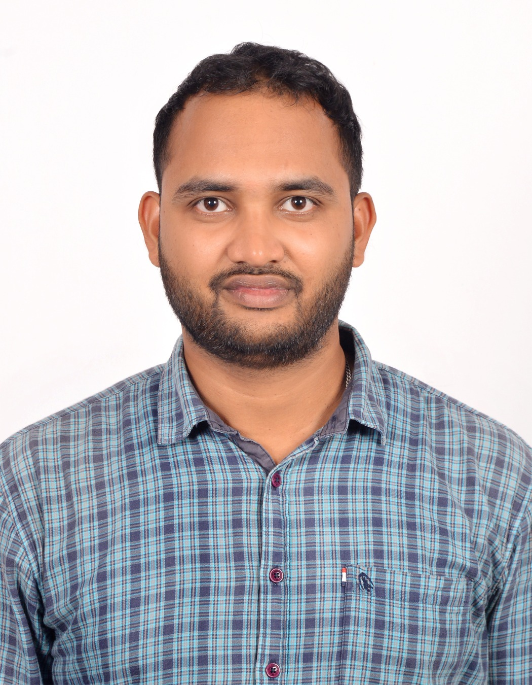

Pradyumna Pradhan
Postdoctoral Fellow
Department of Computer Science and Applied Mathematics
Weizmann Institute of Science, Rehovot, Israel
My research interests include model-based ultrasound imaging, deep unfolding networks, compressed sensing, sparse optimization, and efficient machine learning. I work on combining mathematical methods with data-driven learning for inverse problems and imaging.
Curriculum Vitae (PDF) Google Scholar Email
SAMPL Lab · Advisor: Prof. Yonina Eldar

About
I am a Postdoctoral Fellow in the Department of Computer Science and Applied Mathematics at the Weizmann Institute of Science, where I am a member of the Signal Acquisition Modeling Processing and Learning (SAMPL) Lab.
Before joining Weizmann, I completed my Ph.D. in the Department of Mathematics at the Indian Institute of Petroleum and Energy, Visakhapatnam. My doctoral research focused on compressed sensing, sparse recovery algorithms, deep unfolding networks, and methods for neural network and dataset compression.
I received an Integrated M.Sc. in Mathematics from the National Institute of Technology Rourkela.
Education and Positions
November 2026 – Present
Postdoctoral Fellow
Weizmann Institute of Science, Rehovot, Israel
Advisor: Prof. Yonina Eldar
July 2021 – October 2026
Ph.D. in Mathematics
Indian Institute of Petroleum and Energy, Visakhapatnam, India
Advisor: Dr. Ramunaidu Randhi
July 2015 – May 2020
Integrated M.Sc. in Mathematics
National Institute of Technology Rourkela, India
CGPA: 9.18 / 10
Research Interests
Model-based ultrasound imaging, signal processing, compressed sensing, sparse optimization, deep unfolding, inverse problems, neural network compression, and coreset generation.
Technical Skills
Python, MATLAB, C/C++, PyTorch, CUDA, Jupyter Notebook, Google Colab, and LaTeX.
Research
My research combines mathematical analysis, optimization, and machine learning to develop efficient methods for inverse problems, signal processing, and imaging.
Model-based Ultrasound Imaging
My current research interests include model-based and physics-guided methods for ultrasound imaging. I am interested in combining physical models, signal processing, and deep learning to develop reconstruction methods for quantitative imaging.
Deep Unfolding and Sparse Recovery
My previous work includes the design and analysis of sparse recovery algorithms and deep unfolding networks. This research integrates iterative optimization methods with trainable neural networks, with attention to recovery guarantees, convergence, and interpretability.
Neural Network and Dataset Compression
I have explored compressed sensing, non-negative sparse recovery, and frame-theoretic methods for reducing neural network complexity and training-data requirements.
Ongoing and Future Directions
- Model-based and deep unfolding methods for quantitative ultrasound imaging.
- Interpretable and computationally efficient algorithms for inverse problems.
- Efficient neural network architectures and data reduction methods for imaging applications.
Research Group
I am a member of the Signal Acquisition Modeling Processing and Learning (SAMPL) Lab at the Weizmann Institute of Science, led by Prof. Yonina Eldar.
Publications
Google Scholar profileThe list below is based on my CV. Please refer to Google Scholar for the latest citation information and indexed publication records.
Journal Articles
- 2026
Bound on RIP of order s+1 for HTP Algorithm
S. M. A. Anwar, P. Pradhan, P. Sasmal, and R. Randhi. Accepted in IEEE Signal Processing Letters, 2026.
- 2026
A Frame-Theoretic Approach to Robust Filter Pruning in Convolutional Neural Networks
P. Pradhan, P. Sasmal, and R. Randhi. Accepted in IEEE Signal Processing Letters, 2026.
- 2025
Deep Unfolding of Tail-Based Methods for Robust Sparse Recovery
Y. Kvich, P. Reshma, P. Pradhan, R. Randhi, and Y. C. Eldar. IEEE Transactions on Neural Networks and Learning Systems, 2025.
- 2025
Non-iterative Sparse Signal Recovery Algorithms for Sparse Matrices
P. Pradhan, S. K. Jain, P. Sasmal, and R. Randhi. Journal of the Franklin Institute, 2025.
- 2025
Non-negative Sparse Signal Recovery using ReLU and Hard Thresholding Pursuit
P. Pradhan, S. M. A. Anwar, R. Randhi, and P. Sasmal. Signal Processing, 2025.
- 2025
Deterministic Construction of Unimodular Tight Frames Consisting Orthogonal Blocks
P. Pradhan, S. K. Jain, P. Sasmal, and R. Randhi. Signal Processing, 2025.
- 2025
Sufficient Conditions for Convergence of RHT and RHTP Algorithms
S. M. A. Anwar, P. Pradhan, P. Sasmal, and R. Randhi. IEEE Signal Processing Letters, 2025.
- 2024
Optimization Guarantees of Unfolded ISTA and ADMM Networks with Smooth Soft Thresholding
B. S. Shaik, P. Pradhan, W. Pu, R. Randhi, M. R. D. Rodrigues, and Y. C. Eldar. IEEE Transactions on Signal Processing, 2024.
Conference Papers
- 2026
Efficient Coreset Generation for Chest X-ray Imaging Using Compressed Sensing
P. Pradhan, S. Mukherjee, R. Randhi, and P. Sasmal. Accepted in IEEE International Conference on Image Processing (ICIP), 2026.
- 2025
Deep Learned-CoSaMP Network for Signal Denoising
P. Reshma, P. Pradhan, H. Singh, S. Tenneti, P. Sasmal, and R. Randhi. IEEE SampTA, 2025.
- 2025
Learned ReLU-based Soft Thresholding: A Data-driven Method for Non-negative Sparse Signal Recovery
A. Sen, P. Pradhan, R. Randhi, and C. S. Sastry. IEEE ICASSP, 2025.
- 2024
Unrolled Proximal Gradient Descent Method for Non-Negative Least Squares Problem
A. Sen, P. Pradhan, R. Randhi, and C. S. Sastry. IEEE ICASSP, 2024.
- 2024
Recursive-Tail-FISTA for Sparse Signal Recovery
P. Pradhan, S. B. Shah, R. Randhi, and Y. C. Eldar. IEEE ICASSP, 2024.
Submitted / Under Preparation
- 2026Filter Pruning for Convolutional Neural Networks via Non-negative Sparse Recovery
- 2026Improved s + 1 order RIC Bound for the IHT Algorithm
- 2026Block-Disjunct Algorithm: A Fast, Non-iterative Framework for Block-Sparse Recovery with Sparse Matrices
- 2026Block-Sparse Recovery via Disjunct Property under High Block Coherence
- 2025Disjunct-Block-OMP: A Fast Block Sparse Signal Recovery Algorithm for Embedded Matrices
- —Compressed Sensing-Based Model and Data Compression for Efficient Training and Inference in Chest X-Ray Imaging
Publication titles, author lists, and publication statuses are reproduced from the supplied CV.
Awards and Academic Activities
- 2025International Travel Scheme (ITS) Grant
Anusandhan National Research Foundation (ANRF), Government of India, for participation in SampTA 2025.
- 2024IEEE Signal Processing Society Travel Grant
Travel grant for participation in ICASSP 2024.
- 2021GATE Qualification in Mathematics
Qualified the Graduate Aptitude Test in Engineering (GATE) in Mathematics.
- 2015–2020Academic Excellence Award
First rank in the Department of Mathematics for five consecutive years at NIT Rourkela.
- ServiceJournal Reviewer
Reviewer for IEEE Transactions on Signal Processing, Signal Processing, and Signal, Image and Video Processing. Presented research at RAAM, ICASSP, and SampTA.
Contact
For questions about my research, academic collaborations, or other professional enquiries, please contact me by email.
Email: pradyumna.pradhan@weizmann.ac.il
Personal email: pradpradyumna@gmail.com
Google Scholar: Profile
Affiliation: SAMPL Lab, Kimmel Building, Weizmann Institute of Science, Rehovot, Israel.